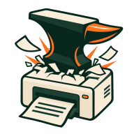
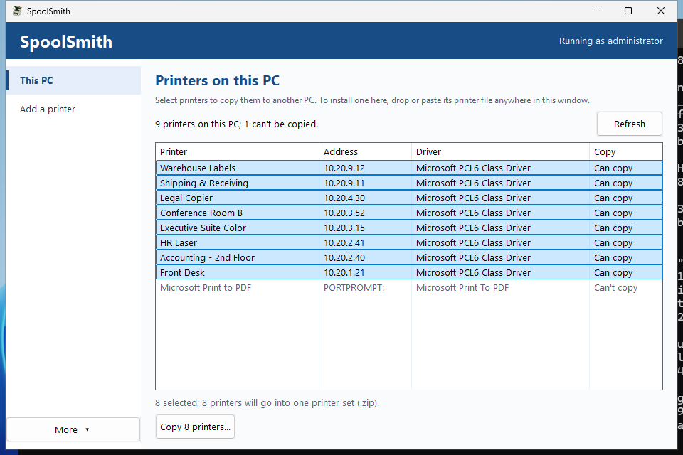
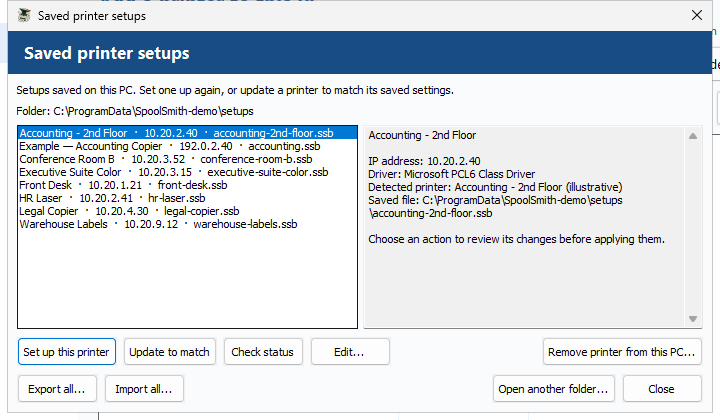
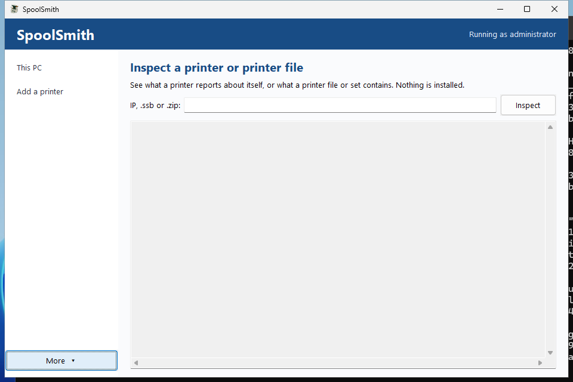
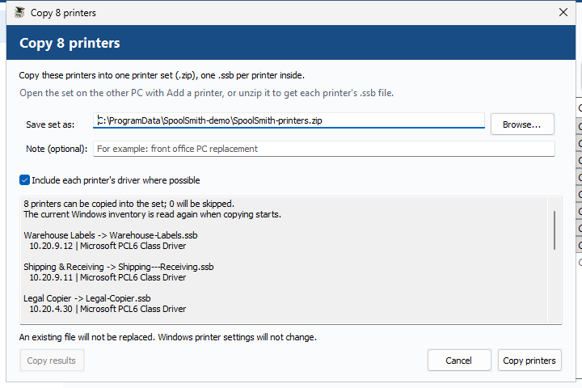
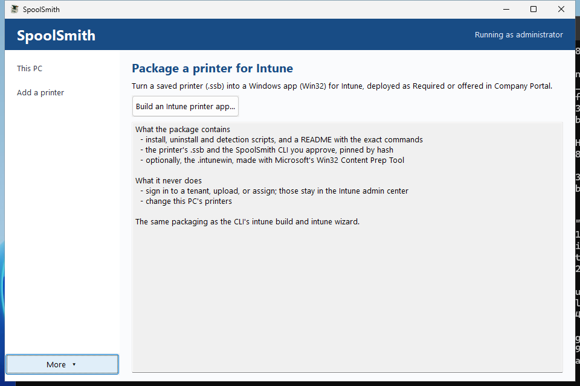

{kind=link}
{kind=link}
{kind=link}
{kind=link}
{kind=link}
Start where it works.
In This PC, select a network printer and press Ctrl+C — or Copy 1 printer... to save it somewhere. Its driver comes along whenever it can be exported.
Drivers need administrator; without it, settings only, and it says why
SpoolSmith.Printer setup, ready to repeat
One PC already prints.
Double-click to give it to the next.
Copy a working printer off one Windows PC — driver included — as a single file. On the next PC, double-click it, drop it on SpoolSmith or paste it in. You see every step before anything changes, and confirm once.
Release notes & SHA-256 checksumTested on real HP and Sharp printers. Works with any network printer that has a standard Windows driver.
What’s supportedNew in 1.3
The desktop app
Two places to go: This PC, to take printers off this computer, and Add a printer, to put them on. Every change opens one review sheet, and nothing happens until you confirm it.


Select one or several and copy them to a file or a set — or press Ctrl+C and paste them into Explorer. Printers that can’t be copied, like Print to PDF, are greyed with the reason.

The network the PC is on is scanned as soon as SpoolSmith starts. Pick a printer, or scan a different network or one address. A printer set opens as a list, and each printer gets its own review.

Under More: set a printer up again, update a queue to match, edit with a backup, or check local status. Export and import the whole library, drivers included, as one .zip set.

Inspect a .ssb or a set without applying it: every printer, its driver and where it came from. The action log sits beside it under More.

Select every printer and save them as one .zip set, one .ssb per printer, drivers included where possible. Stopping saves nothing; the results copy as plain text into a ticket.

A two-step wizard: choose the settings, then validate and review before export. It writes install, uninstall and detection scripts, and creates the .intunewin when Microsoft’s IntuneWinAppUtil.exe sits beside SpoolSmith. No tenant sign-in; upload and assignment stay in your hands.
From this PC to the next
Keep a working setup in a file you control. No account, hosted service, or printer management server required.
In This PC, select a network printer and press Ctrl+C — or Copy 1 printer... to save it somewhere. Its driver comes along whenever it can be exported.
Drivers need administrator; without it, settings only, and it says whyPaste the .ssb wherever you move files, then double-click it on the destination — or drop it on SpoolSmith, or copy it and press Ctrl+V in the app. Settings and driver travel together.
The sheet lists exactly what will change before anything does. SpoolSmith reuses matching settings, so applying the same setup again does not create a duplicate queue.
Not administrator? The shield button asks Windows for youBuilt for everyday IT
Repeated setup should be uneventful. SpoolSmith reuses a matching queue and port, and asks you to update the queue when its settings differ. In the desktop app, choose Update to match from your saved setups.
Need it gone? Remove the queue from its profile. Shared ports and drivers stay available to the printers that still use them.
> .\spoolsmith.exe add --profile profiles\office.ssbThe same setup, without another queue.
Start with one printer
Run the desktop app, or the same operations from PowerShell. The v1.3.0 Windows download includes both the desktop app and the command-line tool.
.ssb into a folder, a share or a chat. Or choose Copy 1 printer... to save it..ssb (SpoolSmith offers to open them on first run), drop it on spoolsmith-gui.exe, or paste it into the app with Ctrl+V.Several printers? Select them all and choose Copy N printers... for one .zip set; open it on the other PC and review each printer in turn. The live check compares reported model evidence with the capture; it does not authenticate a unique device. If the printer cannot be reached or its identity cannot be confirmed, the plan reports offline fallback. A conflicting identity still stops setup.
# On the source PC, as administrator (the driver is included when it can be)
.\spoolsmith.exe printers
.\spoolsmith.exe copy "Accounting" accounting.ssb
.\spoolsmith.exe copy --all printers.zip# On the destination PC, as administrator
.\spoolsmith.exe apply accounting.ssb --dry-run
.\spoolsmith.exe apply accounting.ssb
.\spoolsmith.exe apply printers.zipThe Windows ZIP includes two executables. Open spoolsmith-gui.exe for the desktop app; spoolsmith.exe is the command-line tool. No Go installation or build step is needed.
Explore installed printers, discover devices and save profiles as a standard user. To change Windows printers, use the button with the Windows shield: Windows asks for permission and SpoolSmith reopens on the same printer. Open the app as administrator from the start if you want to copy driver files.
Keep the extracted app in a writable folder. Saved setups live in its profiles folder by default; use “Open another folder” to work with a different library.
Replace the example IP and driver name with yours. To find the driver’s exact name, run Get-PrinterDriver | Select-Object Name.
.\spoolsmith.exe profile capture 192.168.1.50 profiles\office.ssb --name "Office Printer" --driver "EXACT WINDOWS DRIVER NAME"
.\spoolsmith.exe add --profile profiles\office.ssb --dry-run
.\spoolsmith.exe add --profile profiles\office.ssbThe preview shows the setup. The next command asks you to confirm it.
Replace the example subnet with the network you’re working on. Discovery scans up to 256 addresses and lists printer candidates.
.\spoolsmith.exe discover 192.168.1.0/24Choose a candidate’s IP, then use “I know the IP” to save its profile. Discovery doesn’t choose a compatible driver for you.
Copy the saved .ssb file to this PC. Use its included driver files or have a compatible driver installed. SpoolSmith checks the live model when available and reports offline fallback in the plan.
.\spoolsmith.exe add --profile profiles\office.ssb --dry-run
.\spoolsmith.exe add --profile profiles\office.ssbMatching queue and port settings are reused. Your profile remains available for the next workstation.
One printer file, everywhere
One queue’s settings, captured model evidence and optional driver files. Double-click it, drop it or paste it on the next PC.
Captured directly or copied from Windows, every saved printer uses the same .ssb format. Reuse, edit or check it from Saved printer setups.
A plain .zip of .ssb files, one per printer, drivers and all. Copy N printers and Export all make one; so does zipping .ssb files yourself. Each printer in a set is still reviewed and confirmed on its own.
Know what fits
SpoolSmith is an early, portable tool for repeatable network printer setup. Start with one known printer and validate its output.
What remains & validation prioritiesRequires the Windows Print Spooler and PrintManagement cmdlets. Copy supported TCP/IP queues, use a saved profile with a compatible Windows driver, or discover IPv4 candidates. USB queues, shared queues, IPP and LPR setup are outside the current workflow.
Tested with multiple HP and Sharp network printers. SpoolSmith copies the Windows queue and its driver rather than relying on a model list, so any network printer with a standard Windows driver, including Canon and other brands, is set up the same way. A true two-PC transfer and a live address change still need validation on real hardware.
The Windows download includes desktop copy/apply for single printers and printer sets, address changes, profile editing, local status, saved-setup transfer and offline setup. The screenshots show the real Windows app. Copying and applying work with any brand, because SpoolSmith copies the setup that already works rather than looking the printer up in a model list.
Turn a validated profile into a reviewable Win32 app — install/uninstall/detect scripts and the exact commands to paste into Intune — from the CLI or the desktop wizard, and create the .intunewin too when Microsoft's IntuneWinAppUtil.exe sits beside SpoolSmith. Entirely local: no tenant sign-in, no upload, no assignment. Uploading and assigning the package in Intune stays a manual step. How it works
SpoolSmith does not fetch OEM drivers automatically — bring a compatible installed driver, a copied bundle with driver files, or a supported local archive. The download is a portable ZIP; both executables are Authenticode-signed, so Windows shows a named publisher instead of an unknown one.
A useful place to start
Follow a workflow, check the command reference, or read the validation record behind the claims.
Bundle a working queue, bring its driver and apply the saved setup.
ReferenceDiscovery, profiles, offline setup, local status and advanced options.
Release evidenceNative Windows checks, release verification and known limits.
Deployment guideExport a reviewable Win32 app from a validated profile, CLI or desktop.
Before the next printer call
Version 1.1 uses .ssb files for every saved printer. Existing .ssb bundles still work. Older JSON profiles and JSON library exports must be recreated: copy an installed queue, or capture its address and driver into a new .ssb. Keep the originals for reference; renaming .json to .ssb does not convert it.
You can discover printers, inspect files and save profiles without elevation. Changing Windows printers needs administrator rights: in the desktop app, the Install button carries the Windows shield. Only when you press it does Windows ask for permission; SpoolSmith then reopens elevated on the same printer, prepares the plan again and asks you to confirm it. Copying driver files also needs administrator, so open the app that way on the source PC. The command-line tool never elevates itself.
Yes. Open a saved printer file with a compatible driver available. If the printer is unreachable or its identity cannot be confirmed, setup falls back to offline and explains that in the plan before you confirm. You can also choose offline setup directly. A live identity conflict still stops setup. Local status checks Windows settings, not physical printing.
Matching settings are reused. Conflicting settings stop a normal add; use an explicit update after reviewing the new plan. Shared ports and drivers are retained on removal. If an operation is interrupted, an unused port can remain.
Yes, whenever each printer’s .ssb carries one. Copies include the driver where it can be exported (as administrator); a printer copied without it says why, and the other PC then needs that driver installed. A separate vendor archive referenced by a saved setup is not embedded: copy it too and keep its relative path.
SpoolSmith checks every driver file against the hashes recorded when it was copied, and Windows checks the driver’s signature before staging it. A driver that fails either check is not installed. The hashes catch corruption and edits, not a compromised source PC, so trust a copied driver as much as the PC it came from. Choose settings only if you’d rather install drivers yourself.
Yes, without importing certificates by hand. Windows can refuse a correctly signed driver because it has never been told to trust that publisher. When the driver’s catalog signature is valid, SpoolSmith adds that exact signer certificate to the PC’s Trusted Publishers store before installing, and says so in the plan you confirm. Certificates only ever come from a signature Windows itself validates, never from the printer file, and nothing is added to the Root store. Unsigned drivers are left for Windows to accept or refuse.
Yours to keep, inspect, and improve
Free, MIT-licensed software for people who do the printer setup.
Download SpoolSmith v1.3.0